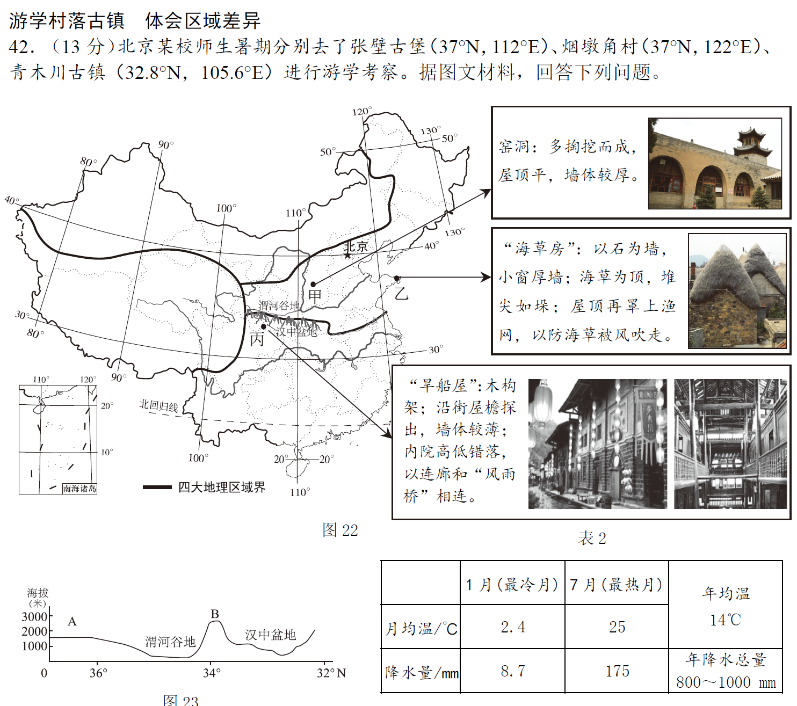
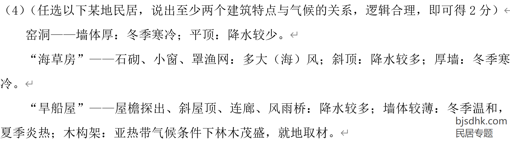

民居专题（5.19）
考点：各种民居的特点，民居的特点与当地自然环境相适应
本页只整理较常考的知识点，做题时请根据具体情况具体分析，千万不要不过脑子直接套
常考的我国南方地区与北方地区民居差异
- 南方：降水较多，屋顶坡度大，利于排水
- 北方：降水较少，屋顶坡度小；降雪较多的地方屋顶坡度大，利于除雪
写出民居特点并根据当地自然环境分析原因
- 窑洞：墙体厚--当地冬冷夏热，温差大（冬季寒冷），墙体厚有利于保温；屋顶平--降水较少；窗户小--防风
- 海草房等南方民居：屋顶坡度大--当地降水多，利于排水；木结构--就地取材；底部架空--防洪；墙体较薄：散热
- 蒙古包：方便拆装--游牧民族逐水草而居，居住位置不固定
例题（2020北京西城）

右键图片→新建标签页中打开图片可查看大图
从材料中三个民居里任选一个，写出其建筑特点与当地气候的关系
例题答案

右键图片→新建标签页中打开图片可查看大图